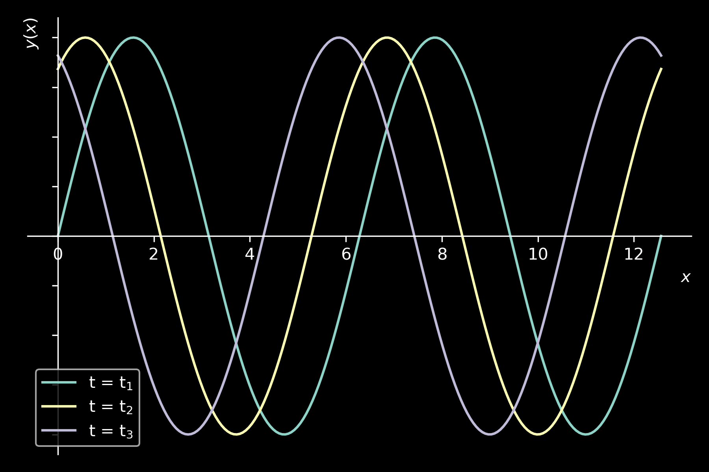

Onde
introduzione alle onde trasversali
Onde trasversali e longitudinali
Onde trasversali
Onde longitudinali

Onde trasversali
Onde trasversali: tempo
Andamento temporale
\( y(t) = y_{m} sin(\omega t + \phi_{x})\)
\( \omega = \frac{2 \pi}{T}\)
\( \omega = frequenza \, angolare\)
\( T = periodo \, temporale \)
Onde trasversali: spazio
Andamento spaziale
Andamento spaziale
\( y(x) = y_{m} sin(k x + \phi_{t})\)
\( k = \frac{2 \pi}{\lambda} \)
\( k = numero \, d'onda \)
\( \lambda = lunghezza \, d'onda \, (periodo \, spaziale) \)
Onda trasversale sinusoidale

\[ \phi_{x} = k x \]
\[ \phi_{t} = - \omega t \]
\[ y(x,t) = y_{m} sin (k x - \omega t + \phi) \]
\[ \phi = fase \, aggiuntiva \]
Velocità di un'onda
\( k x - \omega t = \frac{\pi}{2} \)
\( x(t) = \frac{\pi}{2 k} + \frac{\omega}{k} t \)
\( x(t) = \frac{\lambda}{4} + \frac{\omega}{k} t = x_{0} + v_{onda} t \)
\( x_{0} = \frac{\lambda}{4}; \)
\[ \boxed{v_{onda} = \frac{\omega}{k} = \lambda \, f} \]
Velocità di un'onda lungo una fune tesa
\( \mu = densit \grave{a} \, lineare \, [kg/m] \)
\[ \begin{cases} \vec{F}_{r} = 2 \, sin(\theta) \, \vec{T} = \frac{\Delta l}{r} \, \vec{T} \\ \vec{F}_{r} = m \, \vec{a} \\ m = \mu \, \Delta l \\ a = \frac{v^{2}}{r} \end{cases} \]
\( \Downarrow \)
\( \frac{\Delta l}{r} \, T = (\mu \, \Delta l) \frac{v^{2}}{r} \)
\( \Downarrow \)
\[ \boxed{v_{onda} = \sqrt{\frac{T}{\mu}}} \]
Equazione delle onde
Equazione del moto armonico
\[ \frac{d^{2}[y(t)]}{dt^{2}} = - \omega^{2} y(t) \]
Equazione delle onde
\[ \frac{\partial^{2}[y(x,t)]}{\partial t^{2}} = v^{2}_{onda} \frac{\partial ^{2}[y(x,t)]}{\partial x^{2}} \]
Principio di sovrapposizione delle onde
"Se due funzioni sono una soluzione dell'equazione delle onde, allora anche la loro somma è una soluzione valida"
\[ y_{1}(x,t); \; y_{2}(x,t) \Rightarrow y_{1}(x,t) + y_{2}(x,t) \]
Interferenza tra onde sinusoidali
\( y_{1}(x,t) = y_{m} sin(kx - \omega t) \)
\( y_{2}(x,t) = y_{m} sin(kx - \omega t + \phi) \)
\[ \boxed{y(x,y) = y_{1}(x,t) + y_{2}(x,t) = 2 y_{m} cos \left( \frac{\phi}{2} \right) sin \left( kx - \omega t + \frac{\phi}{2} \right)} \]
Interferenza, onde stazionarie e risonanze
\( y_{1}(x,t) = y_{m} sin(kx - \omega t) \)
\( y_{2}(x,t) = y_{m} sin(kx + \omega t) \)
\( y(x,t) = y_{1}(x,t) + y_{2}(x,t) \)
\( \Downarrow \)
\[ \boxed{y(x,t) = [ 2 y_{m} sin(kx) ] cos( \omega t)} \]
\[ \boxed{ \lambda = \frac{2 L}{n}; \; n=1,2,3...} \]
Onde stazionarie e armoniche di una corda
- Mi (E): 82.41 Hz
- La (A): 110.00 Hz
- Re (D): 146.83 Hz
- Sol (G): 196.00 Hz
- Si (B): 246.94 Hz
- Mi (E): 329.63 Hz
Armoniche di una corda come modi di base
Figure di Chladni
Armoniche di una membrana
Figure di Chladni: chitarra